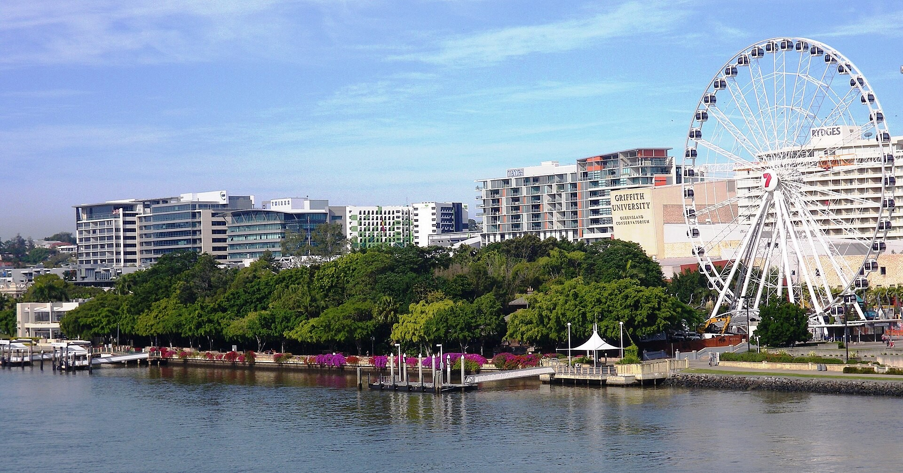
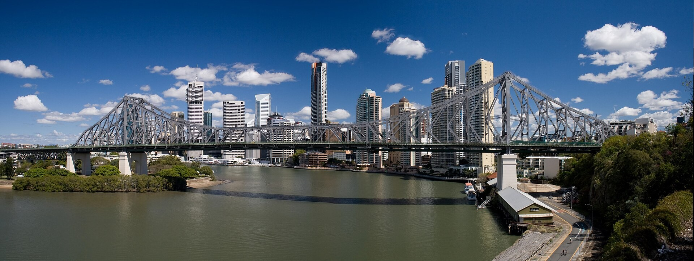

1 南岸公園 South Bank Parklands

South Bank was once an area of docks and factories. Brisbane held World Expo 88 here. After the Expo, people wanted a public park, so South Bank Parklands opened in 1992. The wooden Nepalese Peace Pagoda remains from the Expo.
南岸過去曾是碼頭與工業區。1988年，布里斯本在這裡舉辦世界博覽會World Expo 88，許多國家來展示文化與科技。博覽會結束後，居民希望土地成為大家都能使用的公園，因此南岸公園在1992年開放。園內的尼泊爾和平塔，是博覽會留下的重要木造建築。
Streets Beach is a man-made beach in the city. We can swim and see city buildings at the same time.
Streets Beach是一座城市中的人造沙灘，可以一邊玩水，一邊看見市中心大樓。
2 故事橋 Story Bridge

Story Bridge is named after John Douglas Story. “Story” was his family name. He strongly supported the plan for the bridge. Work began in 1935, and the bridge opened in 1940. Workers built from both sides of the river and met in the middle.
故事橋不是因為橋上有很多故事而得名。Story是John Douglas Story的姓氏。他是重要公務員，也長期支持興建這座橋。據報導，1937年政府宣布以他命名時，個性低調的Story先生驚訝得昏倒了。橋在1935年動工、1940年開放，工人從河的兩岸同時建造，最後在中央接合。
The bridge has about 1.25 million rivets. These strong metal pins hold the steel together.
故事橋使用大約125萬顆鉚釘。鉚釘像強壯的金屬釘，把鋼鐵固定在一起。